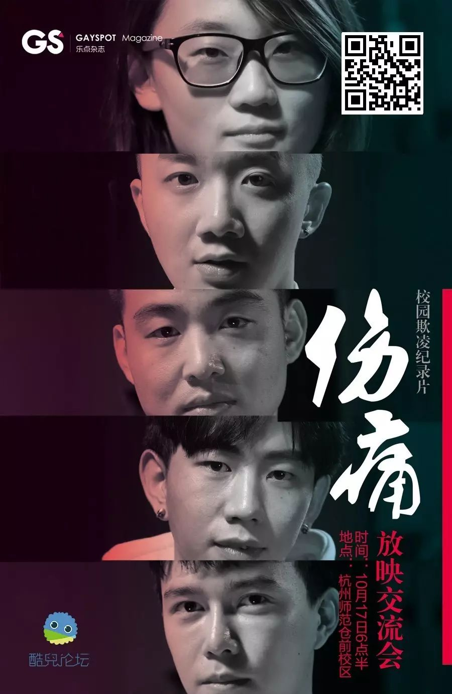

紫色校园 | 校园欺凌STOP！

“紫色纪念日”（Spirit Day）由美国高中生布列塔尼·麦克米伦于2010年创立，旨在唤醒人们对性少数青少年自杀问题的认识。在美国同性恋者反诋毁联盟（GLAAD）的推动下， “紫色纪念日”如今已经演变成了一场团结支持LGBT青少年的国际性活动。每年在十月份的第三个星期四，上百万人穿上紫色衣服、站出来反对针对同性恋、双性恋和跨性别儿童、青少年和青年人群的欺凌行为，提高人们对于多元性别和性倾向的儿童、青少年和青年人的接纳度。

“紫色校园”（Purple My School）是在“紫色纪念日”的基础上，由联合国教科文组织、联合国开发计划署以及亚洲同志项目共同发起的新的倡导活动，号召学生、教师和学校在“紫色纪念日”当天，通过穿戴紫色衣服、画紫色图片和制作紫色物品，表达对校园霸凌强烈谴责，为亚太地区的性和性别少数学生营造安全的空间。

酷儿论坛的会员们在微信群关于校园欺凌进行了各自的分享，并且引发了热烈的讨论。这让我们更加清楚地认识到，由校园欺凌造成的问题对学生的生活产生了巨大的负面影响，这确实是一个不容忽视的问题。
A说他高中的时候会有一群男生一起把班里一位比较瘦小的男同学压在讲桌上“强奸”，做出一些猥琐的动作。而其他人只是在一旁看着，嘲笑着他，没有人上前阻止，也没有人安慰那位男同学。A表示他现在想起来觉得很后悔。
B的故事和A有一些类似。高一的时候，他们会在寝室里把班级里最瘦弱最好欺负的男生摁在床上，然后扒光他的衣服裤子，甚至会拍下视频。有的时候在教室里，也会扒掉他的衣服然后拍照。B表示当时会从这样的事情中获得成就感。
C说她初中的时候和一位女生走得比较近，于是有一个男生就因为这而打她，并且对全班同学说C是变态，后来那个女生也因此渐渐疏远了C。而C的班主任还骂她是神经病，并且说根本不会有女生喜欢C。
D说，曾有男生站在她背后意淫她，当她转身看到这位男生的神情和动作的时候被恶心到了。
E说他小学时候因为行为举止较为阴柔，曾被同学起外号为二椅子（方言中指两性人）,被以戏谑鄙视猎奇的口吻嘲笑，“像个女孩”。

根据2012年同城、爱白联合针对421名各类学生开展的专题网络在线调研显示，77%的被调查者遭遇到17类不同程度的欺凌（包括语言攻击、身体攻击、性骚扰性侵犯、关系孤立等等）。这些欺凌对于青少年血液和心理上产生了巨大的负面影响，导致辍学、厌学、不自信、不愿与人交流、易怒、失眠和自残等等。
10月20日是今年的紫色校园日，大家是不是已经跃跃欲试，想要为更友好的校园环境贡献自己的一份力量了呢！

校园欺凌纪录片《伤痛》
放映交流会
校园欺凌的亲历者
向你讲述
Ta们的故事
杭州有两！场！
分别是杭师范仓前（10.17-18:30）
和浙大紫金港（10.18-18:30）
欢迎各位选择不同的场次报名
·浙江大学紫金港校区（长按扫码即可报名）

·杭州师范大学仓前校区（长按扫码即可报名）
也许这可以帮助你
更好地了解校园欺凌
和我们这项活动的意义

更多后续活动
请继续关注酷儿论坛公众号